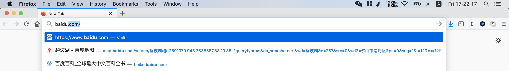
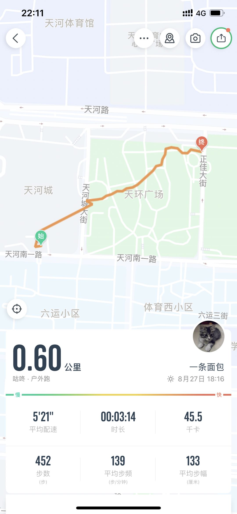
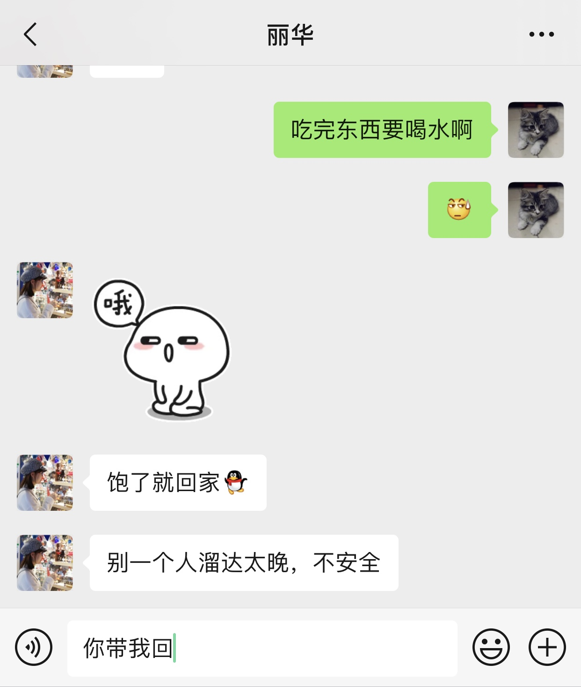

朝顔
如果你想说，那我就在听．
Sunshine
那时拒绝了一个公务员，现在却要找一个公务员．
那时先见了她的家长，现在我的家长却“惹了祸”．
很奇怪，心里想念你到了极点，然后，恨不得要和你倾吐一番．然后，你告诉我说说你有点事做，我觉得我本应会因为无法和你畅谈而有点失望和难过，但是，你回过了我以后，我便心安得多．
今天是认识丽华的第400天．现在我坐在医院门口的花台上，写着这些东西．400天，是不是要写些什么东西总结一下呢．写到这里，眼泪就开始流了．正常来说，似乎应该这样．可我坐下来，的确是临时起意．我不会写一个结局．因为它不是，它可以不是．
这一次，她说她没信心并且害怕有这样的下一次了．我有点难过，但同时也很心疼．回想起来，大概是自己把她重新拖回来．她会说觉得自己拖了我很多时间，愧疚，但同时也珍惜在一起的日子．我非常不同意，她走了，我也不会因为她“不拖我”而怎样．所以，我让她，你真要“愧疚”，也得到点上．我心里当然是不想她这样．
我想了一下，我和她之间的问题至少有：
- 年龄的问题，导致最终是否会能陪伴她一起走下去，并且有精力和她一起承担的问题．
- 年龄的问题，导致她父亲反对我们在一起的问题．
- 她的规划里最近几年也不想结婚，而我可能想最近几年会结婚的问题．
- 她担心我的情绪不太好，像之前一样，做出不好的行为的问题．
- 她亲人觉得我情商不够，或许没有不是一个值得托付的人的问题．
- 她觉得我可能不足够有能力和她承担她事业的问题．
- 我担心她是否会介意我的关系和家庭以及导致她不适应或没有为她带来帮助的问题．
这样一说起来，还挺多的．有些，我可能一直放在心里，没有跟她说过，不知道那时候她会不会认为我又不再和她敞开扉了．但我没有，丝毫也没有过．当然，有些也一起说过好多次了．
刚认识的时候，不到两周，就因为年龄的问题，她拒绝了我．因为她知道家里有无法跨过障碍，所以及早地断了这个念头．那时候我比较难理解，虽然直到后面也比较难理解．我理解家里人会反对年龄过大，也理解父母为子女所想的问题，但程度，没有想到．所以那个时候，我并没有体会她所承受的压力．后来我知道了以后，我感到很心疼，因为我没想到，在我们都面对着这些问题的时候，原来她那么早已经承受着如此巨大的压力．而这样，她还在我身边了这么久．
的确，人固有一死，并且意外可能往往更常见．我也不知道自己什么时候会死．我只想尽量争取活久一点．胖点瘦点没关系，就想正常吃饭，正常睡觉，希望可以活得长久一点，能够陪在她身边．所以，那个时候我会和跟说，我觉得我不理解，平时为什么吃饭睡觉这样一件普通的事，对她和她父亲会变得这么难．可能我不理解“成年人”的压力．也可能是我的想法过于婆妈，那时候我就想，既然身体不好，也会胃痛，不是应该更加注意才对嘛？但我没有责怪她，在她认识了我以后这一段时间里，因为我觉得她已经很不容易了．到后面我知道她身体和心理上的问题．我觉得，这是一个我愿意并应该拼尽全力去守护的一个女孩．所以，很长的一段时间里，我觉得自己是可以接受她的一切的人．包括没有钱．我不愿意承认，尽管还有其他人．当然有．
7月的时候，她父亲的反对，让我始料不及．的确，肯定会有人受伤．3号的时候，她跟我说分手，我接受不了．晚上和我爸打了一个电话，然后整晚没有睡．4号的时候她过来了，说她妈至少会站在她这边去思考这个问题，支持她．那天，我觉得我要牢牢抓住眼前这个女孩．5号在等她的时候，我给他爸写了一封可能永远也看不到的信．回来后，我想起了2号晚上看到她的情景．那天晚上，她是第一次如此“落魄”地出现在我的面前．我突然好疼．我为她，以及她的家庭是带来了多少的不愉快．晚上，我睡不着．写了一封信，想和她说分手．因为我不忍心看到她再流泪，以及让别人的家庭变得支离破碎，尽管我从心里不承认，我和她的问题足以放大到如此大的问题．我相信，会有不愉快，也会有吵闹，正如大佬和她老婆一样，同样面对的问题．我不敢说有问题就一定是好还是不好．第二天，也不知道到底自己睡着了没有．但是，我放弃了这个想法．如果当天放弃，而且是我说的，大概没有后面的一切事情了吧．但我没有后悔．现在也没有．10天后，那个下午，她一直没理我．突然她跟我说，她和父亲闹翻了．现在在收拾东西．我非常惊讶．没有想到事情到了这样的地步．她说让我放心，妈妈让她去亲戚那里先落脚．我打车过去，想见见她．但没有见到．从那里我一直走回来，想着今天发生的事情．一切来得太突然．这段时间的所有事，我都是主要原因，但今天的事，没有想到严重到了签协议的程度．后来她跟我说，那天因为她帮我辩解了，所以吵了起来．她为我说了那么多，我心里非常的感恩．但那时候的我，还傻傻地为她去找招聘的消息．后来，她父亲劝她回家了，并承诺只要不在他面前提起相关的事情，就不再过问．我那时真的觉得会是个好的开始．只是没想到20号的时候，一切来得再次那样突然．视频着，视频着，就分手了．
如今回过头来，面对同样的问题，如果没有这段记忆，我依然会说，这20天里，没有一个能让我觉得应该放手的时刻．2号的时候，我会觉得离家出走是一场闹剧；3号的时候，是我和她真正地痛了，基于表白两天，她勇敢拖上我手这一个事实，作为一个有情绪的人，我不会放手；4号的时候，她站了出来，我也想通了，和她说，我想她有做选择的能力，不想一切白费．5号，当心情再次平静，回忆并重新思考，我知道前路艰难，但想再去努力．7号的之前，我相信她母亲是会坚定地支持她去做选择的，到见完面回去的时候，我感觉到了并不是．那是我令我觉得我做了一件后悔的事，非常赤裸直白地表明，一切都不重要，除了我对她好．从那以后，每当我回想起来，就觉得好傻．我不支持做人要变得虚伪，但是我忽略了当时所处的一个环境这样一个事实，但我发现我很难再做得更好，因为7号为止的信息量，我只有这么的多，我能掏的只有那么多．钱，或许可以证明，但心，没有办法证明．我抱着她母亲会坚定站她并来“视察”的心态，我觉得我错了，没有办法．因为那时我深信这一切是一段爱情里的几个插曲：我知道的就这么多．到了16号，她被赶了出来的时候，已经成为了一个事实，我不能让这件事不发生，但所以信息令我觉得，我要做好接纳一切的准备，住所，找工作，面对她母亲……没想到的是1天后，她又被劝了回去．并且让我觉得一切有了转机．所以我不会放手．到20号的时候，父亲的态度转变，带着她的“决绝”，最后提了分手．一切仿佛就要划上句号．如今重新去看，可能我一切都做得很糟糕，但我依然觉得，没有一个是我最应该放手的时间点．站在这个时间来看的话，会有人觉得我搞笑，怎么在操心这样的事情．但是，就是我．这样的一个我，至少现在让我觉得，她有所改变．
重来一次，我还是会这么做：为她拖上我的手感到开心，为她落魄的样子感觉难过，为让她能够让她知道她也可以选择哭闹一场，为她和家人的摩擦而深刻反省，为我和她一直以来的心灵交流升华到一段爱情而努力，为我为她或家人带来的苦难做准备……一切都是当前里面为数不多，我认为应该做的．而不是放手，回到原点．
……
你就是这样，有什么事就宁愿别人骂骂你．傻的，我干嘛要骂你．只会增加你蠢蠢的想法．
我发现呢，不用“你”的时候，就算随便乱写，也好难写．所以，还是别怪我吧．
今天我哈哈的时候，没有无奈，要说有没有调侃呢，倒是有一些（大方承认）．对着你，我时常会语无伦次．我不怕会说错什么，只要你愿意听我继续说完．最怕你厌倦了，觉得好多小事都没有必要（“不想我误会啊”、“不要给我希望啊”、“没必要解释啊”、“就那样啊”）再去说清那样．
所以，我开始思考因为这些事，让我的表达变得不合适了．比如，7月的时候的确会因为你父亲的事，让我觉得更多的是无奈，而现在，我应该算能比较坦诚地去调侃“这件事”吧．又如，有时可能我会说，“我没有资格去说……”，可能也会让你觉得我“无奈吧”……不过我的确“没有资格”，但我说的时候不是强调我“没有资格”，只是想从第三者的角度去表达吧，你也不要介意．（当然我也不想要我跟你说“你别介意”这样……你就直接说我吧，好不好……）
之前Tony也有说吧，让我去让你成长．我觉得挺对的．倒不是说“让你去多见识见识，然后就会怎样怎样”，也不是说我有多伟大．我的确想看到你成长（不过，我没有把你当女儿来对待……），不管哪方面都是（首先赶紧得病好起来吧[眼睛朝上的表情]……）．拿相亲来说说，我觉得好矛盾啊哈：
- 我当然想知道喜欢的人要面对多少这样的事啊．
- 谁会想自己喜欢的人去相亲啊．
- 当她想的时候，我也想她可以开心啊！她走得比我前．
- 如果她不去，可能会有几个人因此而不高兴．
- 如果她去了，可能没多久就有人要她删了我……
- 我也会想她不去说“五岁，大了”．不管是不是我，关不关我事，自己先别打退堂鼓呀．
- ……
会矛盾，对 我 来说．这个“很矛盾”，不是那种我要去猜、会让我觉得很累的那种“矛盾”．是牵扯着我对你的喜欢那种吧．但是，正如我上面说“我觉得挺对的”，以及我说工作要不要回去这件事一样，我觉得“信心是六成，决心是九成”．那个时候他跟我说的时候，我觉得这种想法是对的，面对这些矛盾，那我就尽量用九成的决心去弥补这六成的信心：我想你开心．如果不是我给的，我也尽量做到让你不再顾忌．发自内心地说，丽华，我还是想你去争取你自己喜欢的，不管那里有没有我，不管多久你才会敢去．
（可能你会觉得我这些心理活动也开始变得多余，因为我没得选择，但我会接着说完．）
这一段时间，我应该没有很做到你想我做的那样．甚至我也会想，要是像我邻居一样，死缠烂打（我知道你不喜欢这个词，但我这里只是单纯陈述和感叹，同时我当然知道正常情况下要相互吸引而不是“死缠烂打”，我只是陈述有时我会“想”这件事）的是家境好的女方多好啊！你才是最终的主角．那一步，终究得由 你 来走．是的，我就是会有这种想法……但我知道太残忍了，所以，每次当这种想法会出现的时候，我就让它出现几秒，然后把它打发走．
虽然没有做到你想我做的那样，但经过思考观察学习，我认识到了一样东西：
最重要的是：不是说服我自己去放弃你，也不是说服你去和我坚持，也不是我们去说服你父亲让我们在一起，而是我们去发现和追寻真相．最好的安排在那等着．
想起之前说的那句话，父母不祝福的婚姻什么的，我实在不理解，子女跟了/他她喜欢而不是自己喜欢的人在一起的话，就会去诅咒他们，然后老死不相往来么……好吧，我过于理性派了……
（我每次在这一页写这些的时候，都不知道会不会过于直白吓到看的人，不过我有时候就会胡思乱想，想啥说啥，不管有没有情绪，不然这个页面地址也不会叫my_heart）
早上下雨的时候相当的闷热，而到了晚上却有一点点风．天空有点晴朗，可以看到缺了一点的明月．没有云，但我很认真地观察了几圈，只有两颗星星，而其中一颗特别亮．
一对情侣在我面前走过，突然想到，那时候，她也还没挽过我的手呢．于是我拿小本本记下来了．
平时我基本都用Google，实在没有办法的时候才会用的百度．今天一点开百度，就出现了这个．

那天上午像侦探一样对着百度地图测量，仿佛就发生在昨天．思绪一下全部涌了上来，心砰砰地跳着．
从没有告诉你，那天我一直在看着你直到消失在夜幕里，我心里还在想，你会不会回头呢．
发现做实验的时候特别有空，然后就会想各种奇葩的问题．
父母不祝福的婚姻，会幸福吗？
第一次来的时候不会方向，自己走了一段路到路边才打的车．今天才发现，原来那里离千灯湖那边的住宅这么近．当时真的傻，怎么走了那么远．那天下了一点雨，好在后面停了．到了之后激动地寻找着你拍照的地方，又同时抑制着心情等你睡醒才找你．最后我们停在围栏那，天气昏昏沉沉．想跟你说话，丽华．
只想早一点见到你．

每次你轻易说出来不再联系，不要再见的时候，我都比较难过．
站起来，干一架．

在你那里的星巴克呆了两天，幻想着你会过来陪我聊聊天．
越来越觉得，因为所谓“客观原因”被迫分开的人们，还必须变得像比成为情侣之前更加陌生是一件很可笑的事情．
30天．我没有很难过．熬过2年就好了．不过，就是我告诉自己看开点，每天都忙起来，依旧不记得自己做过些什么．闭上眼，想到的是那天晚上在灯柱下面跟你视频．然后在你几次挂次之间，写下了那天晚上给你发的笔记．
今天发现一件相当有趣的事，以至于我中午没休息也要写下这几句话：以前学拓扑的时候经常搞不清“里面”和“外面”，就像克莱因瓶一样，里面和外面果然是相对的～丽华，下午要继续加油！
所以，我不再害怕让你觉得我是在为了跟你聊天而聊天．因为我知道，它不是．当你不想我靠近的时候，那我就停下来．
有时我会突然惊醒，然后就大字那样躺在床上，心怦怦地跳，看着天花板，眼前浮现的是你的脸．有时会稍微落泪．
一个月过去了．那天我们躺在那，我捧着你的脸看了一遍又一遍．笨蛋，一点都不丑．就是有点憔悴．看着让我心痛．你面对的太多了，我却没有办法好好地保护你，支持你．上次你出来的时候说害怕看到我沉默，你知道我不喜欢冷暴力的．这段日子，唯一令我不由自主地沉默的就是，我的无能为力．我想跟你说话．无论何时，回到以前不再主动找我也好，我也想跟你说话．今天也想．我的手很粗糙，生怕会划到你的脸．但我舍不得放开，就想那样躺着看着你．
话放到这里了，不是我变得不敢和你说话了，也不是变得不想与你沟通．而是，我知道你不喜欢这样．我理解你．只是，我想把我（们）这一切，快乐也好，不快乐也好，流泪也好，纠结也好，你说无意义也好，全写下来．
那是离你最近的一次之一．暖暖的．是情话（那时的），也是真实感受．
鼓足勇气重新看了一把你的信．这次尽量让自己心里平静，只是眼泪还是会自己流出来．
其实呢，我不知道你会不会觉得我好哆嗦又好幼稚．我经常把你的笑容挂在嘴边，可能你听多了也会烦吧哈……
因为一个笑容而喜欢上一个人，应该是第一次和最后一次吧．我没有办法去对抗这一种力量．你嘴角上扬的时候，我内心便波澜壮阔，充满斗志．听多了，大概你也会腻了吧哈哈，不过，你和它对我来说，就是这样的一个存在．
你父亲如果有天不幸知道了这种理由，又会觉得我是个傻子．某些方面来说，他其实可能是对的．丽华，我没有为你付出过什么．你未来一路上会遇到比我更优秀的人，他们也会同样去关心你．这是你父亲认为你所想要的，谁都可以给你．只是在他眼里，我是这堆人里比较“穷”的一个．所以，有天你忘了或者搞不明白那时的自己为什么会“喜欢”上我，我也不会怪责你．你父亲所说的，我没有因之而自卑过，因为，眼下你遇到的是我，我遇到的是你．你总是强调出场顺序，按身边人安慰我的说话来说，那么我是勉强认同的：如果我不是你第一个男朋友，可能你对于“我们”就会果断得多．但除此之外，我一点都不认同．遇到22岁的你，不管是什么情况之下，对我来讲都是最大的幸运．看着你难过，我自然会心痛；看着你的笑容，我自然会内心感到幸福；更重要的是，可以看到你因为一些事情，一直在成长（我不是当你女儿养）．我只在乎眼前，22岁的你，就是眼前的你，那时陪我哭和笑的你．
所以，当有人要把你的笑容抢回去的时候，我能不难过，心不死么．
越平凡的想法，越难实现．跟你一起（不是特指“牵手”的时候）的很舒服，无拘无束，任由思绪放空．纵使有半刻突然安静，我也不会觉得尴尬（[吃瓜表情]虽然你有……）．
你的笑容，总是会让我充满波澜．每次看到你笑，总是觉得特别幸福（[痴汉表情]是的，没跟你在一起的时候已经这么感觉了）．同时，你的笑容让我特别容易心软．心软到，什么都想答应你，甚至是让你走．
尽管你常说自己也不够阳光，总是没有我想象中那么好，还会因为自己“阴暗的地方”而自卑．30年多，见过形形色色的人，我已经很清楚知道，我不会再遇到一个像你一样的人了—这样一个平凡但热爱生活的人．你需要足够的客观，足够的时间去发现你最内心深处的东西，同时也需要人来欣赏和激发．
丽华啊丽华，没有你的话，我又怎么会好呢．我所能做的，就是让不好的时候，自己尽量不要那么糟糕．
我想，一个人去找个人结婚什么，应该可以是很简单的．但是，这一种理解和陪伴，就很难了．因为它那么难得，我才不会轻易放手．为了这一份“不明所以的喜欢”（依赖、陪伴、还是别的都不重要了），我还可以承受很多．我不会委屈自己，你要放心．你说，美好的事情来之不易，的确．我也一定不会用你不喜欢的方式来换取．
你不知道，你改变了我的有太多太多．你所看到的我，是一个“我们”一起走过来的“我”．
以前我常常笑自己死理性，认识你之后才发现找回了10几年前那个容易被触动的自己．这一点，你可能没发现吧．你应该会觉得一直以来（从未认识你之前）我就是这样子的．我跟你说，我不在意别人的看法等等，是我多年来逐渐选择性地在一些事情上刻意变得“麻木”，理性告诉我权衡利弊，不值得操心的事有太多．现在我依然那么觉得，不同的是，我会勇于接纳各种突如其来触动，很庆幸，遇到你让我重新找到了失去了的很久以前的自己．心强烈地跳动的感觉，真好．[憨笑表情]不过，你应该还没见过我特别理性的样子，除了在电话里一次次去“抨击”你的小想法的时候．
我想，作为一个普通人，人生已经很艰难了．我的出身与经历，让我学会用理性来武装和保护自己．但是，除去这些方方面面，在感情上，至少能有一点“感性”（没有说不理性[眼珠朝上的表情]）．谁不想有过得有血有肉的时候呢？这种“感性”，带来的是一种港湾的感觉．哪怕它阳光明媚的时候，也会偶尔有风雨，我也想停靠．
你无形地给我带来的这一种信念，是我目前这辈子最强烈的一次了，比起过往一切学习、工作和生活上的所有事情．所以，即使当你跟我说你不坚定不相信的时候，我会有点难过，但是，我依旧选择去相信，去期待．只是事情变得复杂起来，操作顺序亦发生变化．最遗憾的结果就是，到那时候，那时的你已经不会再在了．
我拼尽全力，不是要“得到你”（尽管我充满期待），而是去保护和珍惜我们相遇相知的机会．
仰望星空，脚踏实地．